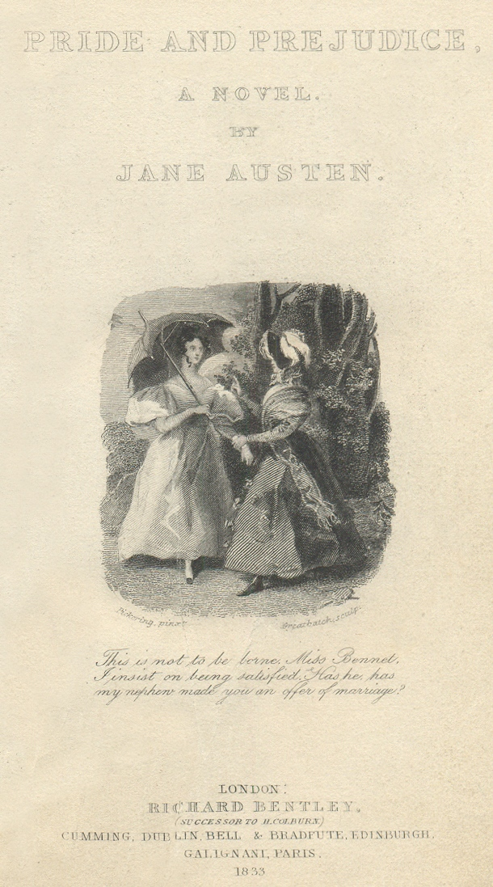

It is a truth universally acknowledged that a single man in possession of a good fortune must be in want of a wife — and so the news of Netherfield Park's new tenant reaches Mrs Bennet like a military dispatch. Mr Bingley is young, handsome, and worth five thousand a year; that is cause enough for campaigns, manoeuvres, and at least two new bonnets. Her five daughters — Jane, Elizabeth, Mary, Kitty, and Lydia — exist in a household whose only real urgency is matrimony: none of them will inherit Longbourn, and their father's estate passes by entail to a male cousin.
"It is a truth universally acknowledged, that a single man in possession of a good fortune, must be in want of a wife."
— Opening line, Chapter 1
Mr Bennet, a man of dry wit and studied detachment, has long since retreated into irony from a marriage more vigorous in nerves than in sense. He obliges his wife by calling on Bingley, but takes visible pleasure in letting her suffer the suspense first. At the first neighbourhood assembly, Bingley arrives with his fashionable party — including his still more fashionable friend, Mr Darcy, whose annual income of ten thousand a year Mrs Bennet clocks in an instant. Bingley dances every dance and singles out Jane at once. Darcy surveys the room with cool displeasure and declines to be introduced to Elizabeth. She is, he tells Bingley within her hearing, "tolerable, but not handsome enough to tempt me." Elizabeth overhears the slight, laughs at it, and repeats it to her friends — a response that tells us almost everything we need to know about her.
"She is tolerable, but not handsome enough to tempt me."
— Mr Darcy, overheard by Elizabeth at the Meryton assemblyMrs Bennet returns home triumphant about Jane and oblivious to the slight against her second daughter. The evening ends exactly as Austen intended: the reader already suspects Darcy's dismissal will cost him dearly.
The Social Architecture
Austen's comic engine is already running at full speed: Mrs Bennet is ridiculous, but she is not wrong — marriage really is the only viable future for her daughters. Darcy's contempt for Elizabeth is the novel's first great irony, and his throwaway insult is the pebble that sets the whole avalanche in motion.
Jane's visits to Netherfield become longer and more deliberate. When she rides over during a downpour and falls ill, she is installed as a houseguest — and Elizabeth, refusing to wait decorously at Longbourn, walks three muddy miles to nurse her. The visit places Elizabeth squarely in Darcy's company for several days running. He finds himself watching her, then catching himself watching her, then becoming irritated that he watches her at all.
His companions, Bingley's sisters Caroline and Louisa, are delighted to condescend to Elizabeth in the drawing room and whisper against her behind her back. They consider Darcy's apparent interest absurd, and say so with the particular cruelty of women who feel perfectly secure. Darcy, meanwhile, has begun noting Elizabeth's fine eyes in his private thoughts — which is how a man who prides himself on rational judgement finds himself utterly undone by a woman he has already judged beneath him.
"I have been meditating on the very great pleasure which a pair of fine eyes in the face of a pretty woman can bestow."
— Mr Darcy, Chapter 6Back in Meryton, the social calendar continues its steady pressure. The Bennet daughters attend balls and dinners. Jane and Bingley's attachment deepens into something that looks very much like an understanding, though nothing is formally said. Elizabeth watches them with quiet pleasure and believes Bingley genuinely in love. What she cannot see is that Darcy is already considering whether to intervene.

A Netherfield Ball provides the novel's first sustained set-piece of social comedy: Mrs Bennet boasts extravagantly within Darcy's hearing, Mary plays the piano too long, and Darcy himself asks Elizabeth to dance — less a concession than a capitulation he has not yet understood as such. Their conversation on the floor is all sparring wit, and he leaves it more unsettled than when he entered.
"I hope I never ridicule what is wise or good. Follies and nonsense, whims and inconsistencies, do divert me, I own, and I laugh at them whenever I can."
— Elizabeth Bennet, Chapter 11Pride Before the Fall
Darcy's attraction to Elizabeth is inseparable from his disdain for her family and station — and Austen makes us feel both with equal precision. His admiration is real; his condescension is also real. The Netherfield Ball sets the two in collision, and the reader understands before Darcy does that he has already lost.
Two new figures arrive to disturb the Hertfordshire equilibrium. The first is Mr Collins, the Bennet girls' cousin and their future inheritor of Longbourn — a man of extraordinary pomposity who manages to quote Lady Catherine de Bourgh, his noble patroness, approximately once per sentence. He has come to Hertfordshire specifically to marry one of the daughters, and selects Elizabeth with the confidence of a man who assumes refusal is not an option.

His proposal — cumbersome, self-congratulatory, and utterly tone-deaf — is declined with clarity. Collins, unable to believe it, interprets the refusal as feminine coyness and persists until Mr Bennet steps in: "An unhappy alternative is before you, Elizabeth. Your mother will never see you again if you do not marry Mr Collins, and I will never see you again if you do." Collins recovers with admirable speed by proposing to Charlotte Lucas. She accepts. Charlotte has calculated, with cold accuracy, that Collins is a fool she can manage — and that a comfortable home beats no home at all.
"I am not romantic, you know. I never was. I ask only a comfortable home; and considering Mr Collins's character, connections, and situation in life, I am convinced that my chance of happiness with him is as fair as most people can boast on entering the marriage state."
— Charlotte Lucas, Chapter 22The second arrival is Mr Wickham, a militia officer — charming, handsome, plausible — who singles out Elizabeth almost immediately. Over a chance meeting in Meryton, he tells her a compelling story: that Darcy, the son of his godfather, robbed him of a promised living after his father's death, leaving him to make his way on an officer's pay. Elizabeth listens, fully persuaded. Wickham tells the story with just enough apparent reluctance to make it seem dragged from him against his will — which is precisely how a liar would tell it. Meanwhile, back at Longbourn, it is left to earnest, overlooked Mary to articulate the novel's central distinction: pride relates to one's opinion of oneself, while vanity is about what one wishes others to think. It is the most useful thing anyone in the family says, and nobody listens.
Reasonable Misreading
Charlotte accepts Collins and Elizabeth accepts Wickham's story for the same reason: both judgements are entirely reasonable given the available evidence. Austen never lets Elizabeth off easily — her errors are not stupidity but the product of prejudice that mirrors Darcy's own pride. Darcy misjudges Jane's feelings from the outside; Elizabeth misjudges Wickham's character from the inside. Each is undone by believing their own reading of a person rather than the person themselves.
In the spring, Elizabeth visits Mr Collins and Charlotte in Kent — an excursion that delivers her, quite unexpectedly, into the orbit of Darcy, who is visiting his aunt, the formidable Lady Catherine de Bourgh, at Rosings Park. Their renewed acquaintance is marked by the same friction as before, though Elizabeth now notes that Darcy seems to seek out her company with a persistence she cannot quite explain.

Then, one evening, he appears at the Collinses' parsonage — alone, agitated — and delivers his proposal. It is a masterpiece of the wrong kind. He tells her how ardently he admires and loves her — then spends nearly as long on his reluctance, his sense of her family's inferiority, the degradation the match would cost him. Elizabeth refuses. Not from dislike alone, but with a precise accounting of his wrongs: he separated Jane from Bingley, ruined Wickham's prospects, and proposed with insufferable condescension throughout.
"In vain I have struggled. It will not do. My feelings will not be repressed. You must allow me to tell you how ardently I admire and love you."
— Mr Darcy, first proposal, Chapter 34Darcy leaves, shaken. The next morning he delivers a letter — long, frank, and devastating in its effect. He explains that he judged Jane insufficiently attached to Bingley — plausible, Elizabeth must admit. He then reveals the truth about Wickham. The man's real grievance was Darcy's refusal to fund his dissolute lifestyle after squandering his inheritance. His most recent act: an attempt to elope with Darcy's fifteen-year-old sister Georgiana, for her fortune. Elizabeth reads the letter once — and dismisses it. Then she reads it again. The charge about Wickham, she realises with creeping horror, is entirely consistent with things she already knew but had not examined. Her confidence in her own judgement — always her greatest pleasure — begins to crack.
"How despicably I have acted! I, who have prided myself on my discernment! I, who have valued myself on my abilities!"
— Elizabeth Bennet, after reading Darcy's letter, Chapter 36The Letter That Changes Everything
Darcy's proposal fails because his pride is still intact — he expects acceptance despite spelling out why the match appals him. But the letter that follows is a different matter: it does not attempt to persuade so much as to correct, and it is the first honest thing either of them has done. Elizabeth rereading it is the novel's true turning point — the moment she stops laughing and starts seeing.
Months pass. Bingley inexplicably quits Netherfield; Jane goes to London and does not see him. The household returns to its ordinary anxious hum. That summer, Elizabeth joins her aunt and uncle, the Gardiners — cultured, calm, and well-matched, everything her own family is not — for a tour of the north of England, which takes them, almost accidentally, to Derbyshire and specifically to Darcy's seat at Pemberley. He is not expected to be home.

Pemberley surprises Elizabeth. The house is grand but without ostentation. Its grounds are handsome but natural. The housekeeper, who has known Darcy since boyhood, speaks of him with genuine warmth — not the servile praise Elizabeth might have expected. He has never been proud to his inferiors, the housekeeper says, and she has never had a cross word from him. Elizabeth looks around the beautiful rooms and finds herself thinking — for the first time with something like regret — that she might have been mistress of all this. Then Darcy himself appears, having returned early, and the encounter on the lawn is something altogether new: he is courteous, warm, considerate, entirely without the stiffness that made him hateful before. Elizabeth is disarmed.
"She had never seen a place for which nature had done more, or where natural beauty had been so little counteracted by an awkward taste."
— Elizabeth at Pemberley, Chapter 43He meets the Gardiners with perfect ease. He introduces his sister Georgiana, shy and gentle. He asks if he may introduce his friend Bingley — a signal, perhaps, that he intends to undo what he did to Jane. For a few warm days, something new seems possible. Then a letter arrives from Jane: Lydia has eloped with Wickham.
"At that moment she felt that to be mistress of Pemberley might be something!"
— Elizabeth Bennet, Chapter 43The House That Makes His Case
Pemberley is the novel's most elegant reversal: the house argues for Darcy better than Darcy ever argued for himself, and Elizabeth's shift in feeling is inseparable from what she sees there. The elopement lands with particular force because Lydia's letter arrives at the exact moment Elizabeth has let her guard down — it is not random bad timing but the consequence of Wickham's character, the very character Elizabeth once championed against Darcy's. The catastrophe is the final payment on her earlier misjudgement.
Lydia's elopement with Wickham — a man with no money, no honour, and no intention of marrying her without financial inducement — threatens to ruin the entire Bennet family. An unmarried woman who has run away with an officer destroys the social standing of every sister she leaves behind. Mr Bennet departs for London to find them. Mrs Bennet takes to her room in spectacular distress. Elizabeth confronts, in this lowest moment, the consequences of her own family's chaos — and her own failure to warn anyone about Wickham's character.
The resolution, when it comes, arrives from an unexpected source. Lydia and Wickham are found, and Wickham's debts are paid — and the man who arranged and funded it all, Elizabeth learns through the Gardiners, is Darcy. He did it not from duty but from love, from a desire to repair harm he felt partly responsible for, and with no expectation of acknowledgement. Elizabeth is stunned. It is the act of a man who has genuinely changed.
"You are too generous to trifle with me. If your feelings are still what they were last April, tell me so at once. My affections and wishes are unchanged, but one word from you will silence me on this subject for ever."
— Mr Darcy, second proposal, Chapter 58
Bingley returns to Netherfield, proposes to Jane, and is accepted. Then Lady Catherine de Bourgh descends on Longbourn in high fury — she has heard rumours of Darcy and Elizabeth, and demands Elizabeth promise never to marry her nephew. Elizabeth refuses, splendidly. Darcy, hearing of his aunt's visit, understands that Elizabeth did not discourage him — and comes to Longbourn himself.
His second proposal is stripped to its essentials — no preamble, no qualifications, only the question of whether her feelings have changed. Elizabeth accepts — and then tells him, with the old warmth restored, that she loves him. They walk together, and she explains how she came to see him more clearly; he explains how her refusal forced him to examine himself. It is, for both of them, the conversation that could only happen after everything that came before.
"I cannot fix on the hour, or the spot, or the look, or the words, which laid the foundation. It is too long ago. I was in the middle before I knew that I had begun."
— Mr Darcy, Chapter 60The Argument the Ending Makes
The novel does not end by rewarding virtue — it ends by rewarding self-correction. Neither Darcy nor Elizabeth is a better person in the conventional moral sense; each has simply become capable of being wrong about themselves. That, Austen quietly insists, is rarer and more valuable than goodness: the willingness to reread your own first chapter and revise the conclusions you were most certain of.
Central Themes
Pride and Self-Knowledge
Both Darcy and Elizabeth are intelligent people undone by their own blind spots — his social pride, her confident prejudice. The novel argues that self-examination is harder than self-congratulation, and that the two characters can only reach each other by learning this the painful way.
Marriage and Economic Reality
Austen never lets us forget that marriage is not merely romantic: for women of the Bennet class, it is the only path to security. Charlotte accepts Collins with clear eyes; Lydia elopes without thinking at all. The novel presents the full spectrum — from mercenary to reckless — and places Elizabeth's marriage to Darcy as the rare case where love and material sense coincide.
Class and Its Discontents
Darcy's world polices its boundaries relentlessly — Lady Catherine de Bourgh is its most grotesque enforcer — but Austen shows that class judgment is also a failure of perception. The people who sneer at the Bennets consistently misread character; those who do not are consistently right.
Irony as a Form of Truth
Austen's narrating voice is never straightforwardly earnest. The famous opening sentence is ironic: it mocks Mrs Bennet even as it concedes her point. This double vision — sympathising while laughing — is itself an argument that clear sight requires a sense of humour.
Fun Facts
The Rejected Title
Austen's original title, "First Impressions," was not available — another novel had already been published under that name. She chose "Pride and Prejudice," a phrase that appears three times in her earlier novel Cecilia by Fanny Burney.
The 1995 Effect
The BBC miniseries with Colin Firth sold 100,000 VHS box sets while still airing. An estimated 10 million viewers watched the final episode — transforming Darcy into one of the most recognisable romantic heroes in popular culture.
Endless Reimaginings
The novel has been adapted into a Bollywood film (Bride and Prejudice), a zombie thriller (Pride and Prejudice and Zombies), a contemporary romcom (Bridget Jones's Diary), and a gay drama set on Fire Island — among dozens of others.
Austen's Own Verdict
In a letter to her sister Cassandra, Austen called the novel "rather too light, and bright, and sparkling" — which is the closest she ever came to admitting it was perfect.
Famous Passages
"It is a truth universally acknowledged, that a single man in possession of a good fortune, must be in want of a wife."
— Opening line, Chapter 1One of the most recognised opening sentences in the English novel works by saying the opposite of what it means: it is the neighbourhood, not the bachelor, that is in want. The irony announces Austen's method for the next sixty-one chapters.
"In vain I have struggled. It will not do. My feelings will not be repressed. You must allow me to tell you how ardently I admire and love you."
— Mr Darcy, first proposal, Chapter 34Darcy's declaration is genuinely moving — and genuinely disastrous. The next forty words undo it entirely, as he explains why the match degrades him. Elizabeth is not wrong to refuse, and neither is he wrong to offer. The scene is a perfect collision of two people who are each half-right.
"I cannot fix on the hour, or the spot, or the look, or the words, which laid the foundation. It is too long ago. I was in the middle before I knew that I had begun."
— Mr Darcy, Chapter 60Asked when he fell in love, Darcy cannot say — because love in this novel is not an event but a process of revision. His answer is also Austen's answer to everyone who wants the story to begin at a particular moment of recognition.